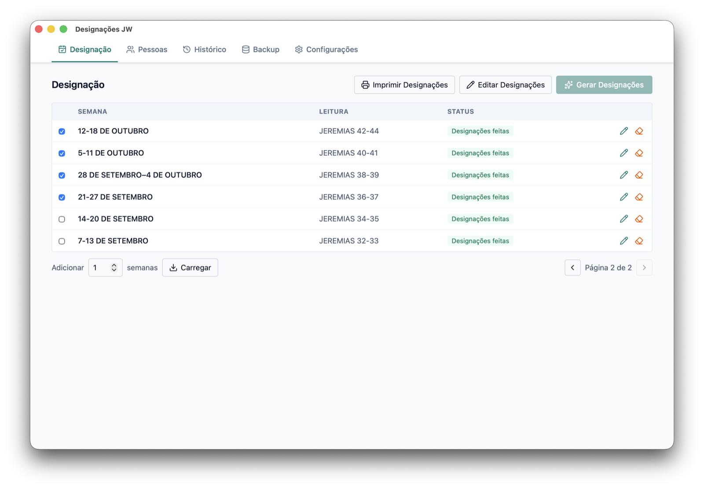
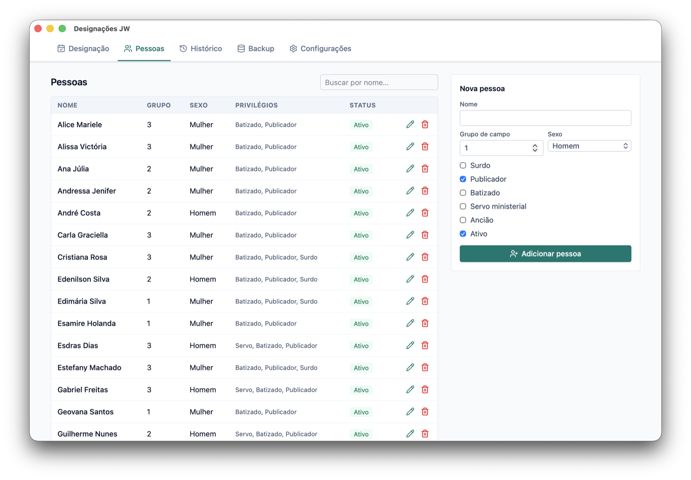
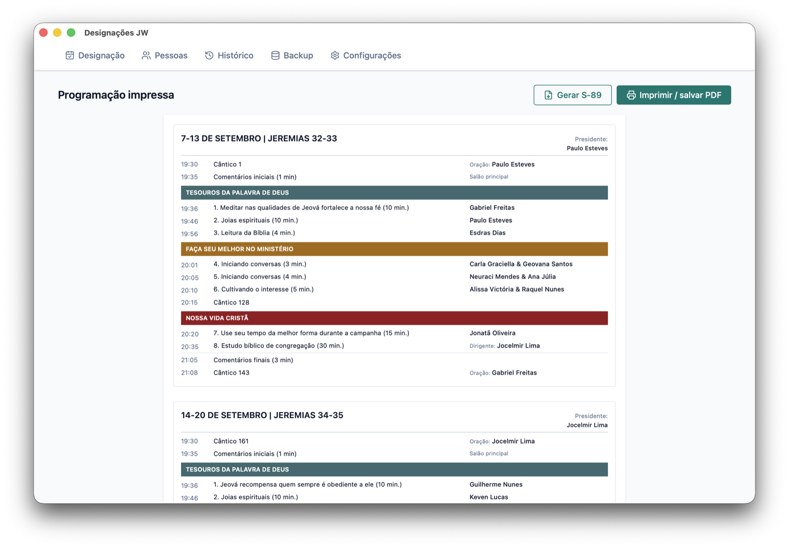
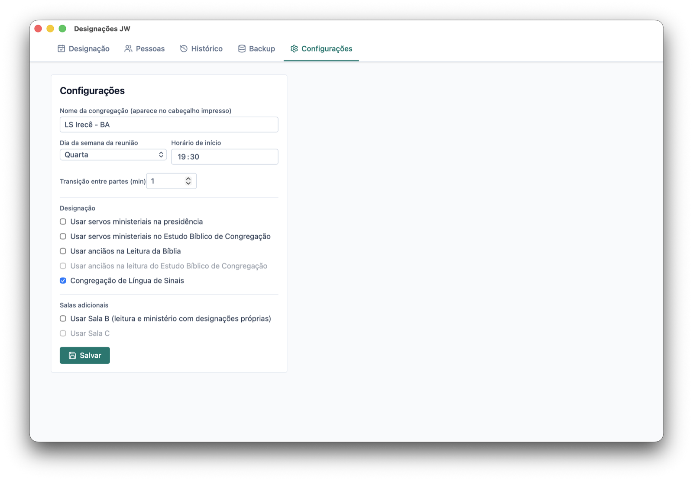
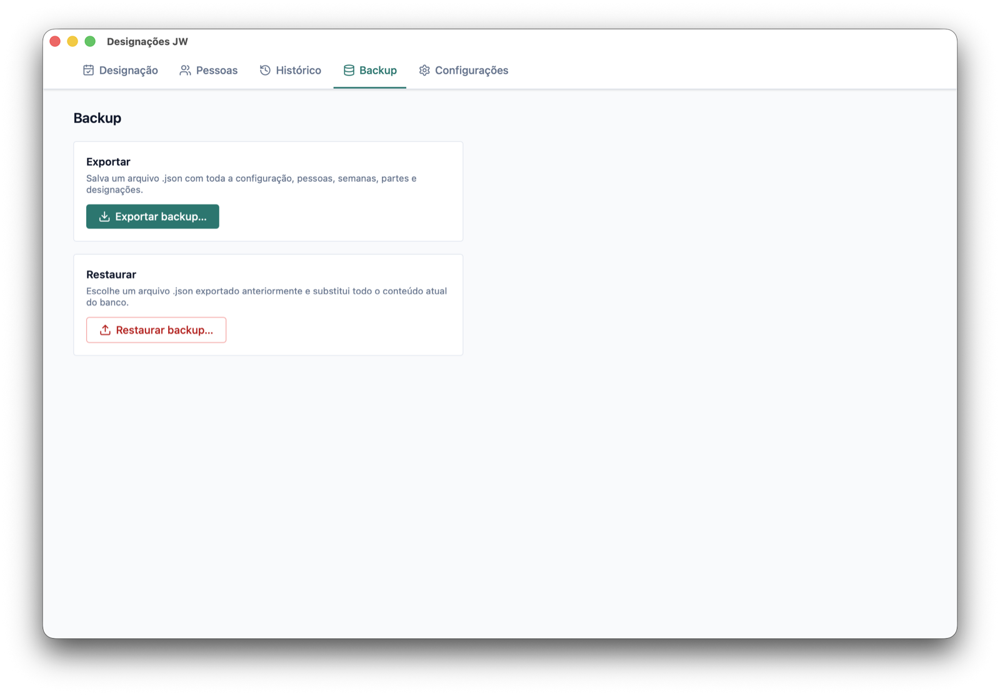

Programação atualizada
Busca as partes das próximas semanas direto no material oficial e monta a estrutura da reunião para você.
Para Reunião Vida e Ministério
Cadastre a congregação, busque as partes das próximas semanas e deixe o app distribuir as designações de forma equilibrada — com preview editável, programação para imprimir e formulários S-89 preenchidos automaticamente. Gratuito, open source e offline.
Menos planilha, menos retrabalho. Mais tempo para revisar e confirmar com tranquilidade.
Busca as partes das próximas semanas direto no material oficial e monta a estrutura da reunião para você.
Respeita critérios (anciãos, servos, batizados, homens e mulheres) e equilibra quantas vezes cada pessoa participa.
Revise cada designação antes de gravar. Troque nomes, ajuste e confirme só quando estiver pronto.
Gera a página no layout familiar da reunião, pronta para imprimir ou compartilhar com a congregação.
Preenche automaticamente as designações individuais dos estudantes e salva os PDFs prontos para entregar.
Ative Sala B e Sala C quando a congregação usa salas paralelas — com designações próprias de leitura e ministério.
Modo para congregações de língua de sinais, com regras e cadastro adaptados (incluindo irmãos surdos).
Acompanhe quem já participou e exporte ou restaure tudo em JSON — os dados ficam no seu computador, offline.
Um app desktop para o sistema que você já usa no dia a dia da congregação.
Capturas reais do app em uso — do cadastro à impressão.





O app é gratuito e de código aberto. Instaladores do último release no GitHub.
O app ainda não é assinado digitalmente. No macOS, na primeira abertura use botão direito → Abrir. No Windows, se o SmartScreen aparecer, escolha Mais informações → Executar assim mesmo.
Outros formatos (MSI, deb, rpm) ficam na página de releases.